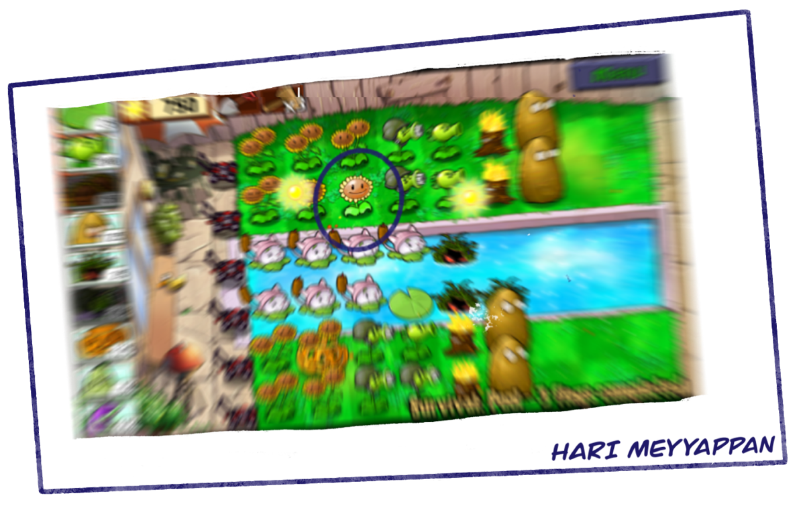
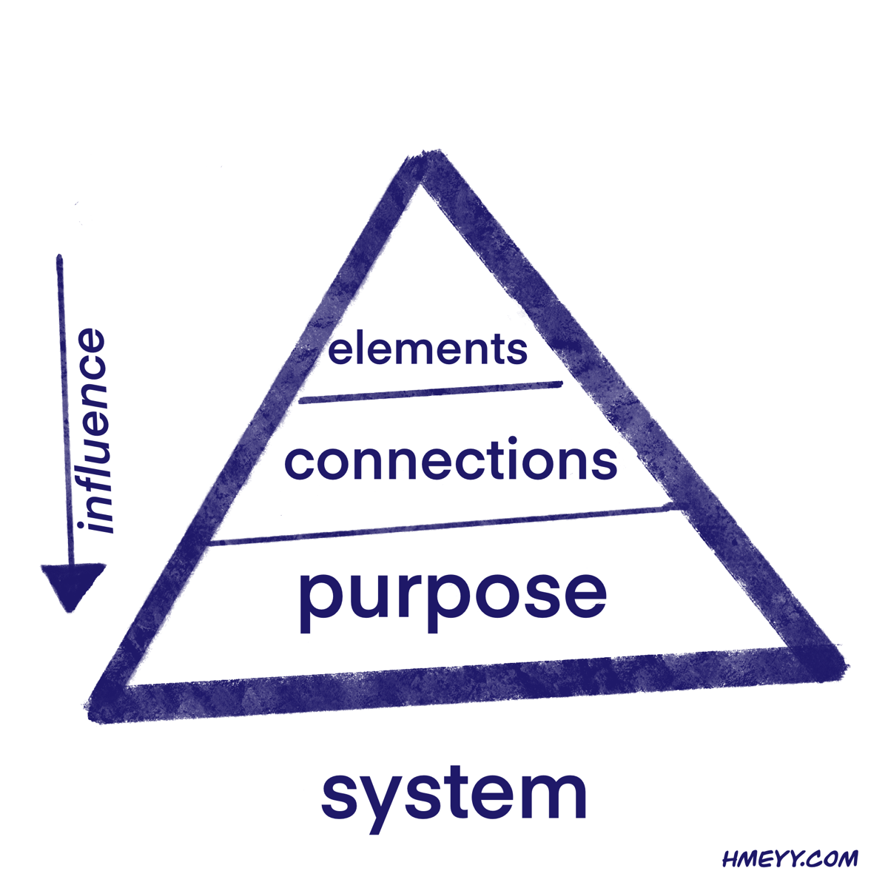

Ode to Systems Thinking
On Systems
Systems are everywhere. Living things are bio-chemical machines. The nervous, immune, digestive and a dozen other systems work together to keep us alive. Brains are information processing systems.
Organizations are systems; as are cities, economies, eco-systems, nations, planets and our solar-system.
To predict accurately we need an accurate model of reality. Thinking in systems helps us model reality, ask better questions and make decisions. The best craftsman, artists and engineers are all strong systems thinkers.
Schools, unfortunately, tend to treat subjects as individual silos. They create artificial distinctions meant for specialization. When we look underneath the hood, we see concepts bleeding from one field into another. Reality doesn't care for distinct subjects, subjects are silos themselves. New insights happen at the fringes, where fields intersect. With so much knowledge to be discovered, I believe learning to think in systems is the best way to assimilate knowledge and put it to use.
Consumers, Creators and Investors
A common distinction we make in society is between creators and consumers. Creators spend time, attention, energy and money to create value, either by themselves or through labor. Consumers consume value and propel the economy. We are all creators and consumers in one way or the other. That's the fun part about living now.
Creating value for others, apart from being a satisfactory way to live, is very rewarding at this time in human history. This is because of our leveraged world. And scaling up value requires seeking leverage.
Good investors are natural leverage seekers. The fastest way to find leveraged investments is to understand the system and ask good questions.
We are all investors of time, energy and money. We have, for all practical purposes, have conscious agency in the world. We would rather live in a world where we can affect our goals as opposed one where we can't.
Since we're invested in our goals, and we have information streams, it's useful to update our beliefs to more accurately reflect reality.
If we were to abstract the thought process, it would look something like this:
Loop:
1. I have deduced/ come across some information. How likely is this true, and how do I know?
2. If this is true, what else is true? How will this change over time?
End Loop
- What does this mean for my investment?
To each question we give our best answers. Once we formulate a belief based on available information, we estimate our conviction in a belief. "I am 60% certain that x is true based on so and so". They follow this up with "I arrived at 60% and not 50% or 70% because of so and so". Followed by, "Given my current bankroll and risk tolerance, I'm going to pass on this".
Now, if their position turned out wrong, they (1) know the thought process behind the decision and (2) can predict if the outcome was based on skill or luck. Knowing this information, they can improve the model they used to make the decision, for example, by updating their certainty in their own beliefs, in giving different weightage to an aspect of the investment or asking better questions. This model is rational.
An important thing to note is that this process of updating beliefs also requires a sufficient number of iterations to reach a local maxima in any given game. We have to play games that give compounding results over time - investment, in its technical sense, is such a game. So is any form of skill development. Quantity, or more iterations, yields quality, and this is the goal of deliberate practice.
Becoming better investors
As an investor of time, energy and money, predicting and influencing the future is the biggest leverage one can have.
Since we cannot exactly predict the macroscopic future, we might settle for a probability distribution of the future and calculate exactly how much you want to bet on each outcome.
So the question is, how do you figure out the outcomes and calculate the probabilities of each outcome?
You might rely on hundreds of years of scientific knowledge as a guide. This is the value of education, in the traditional sense - passing knowledge from one generation to the next.
However, incentives of many educational institution are not entirely aligned with the incentives of the student. Education helps us push the boundaries of our knowledge a little further, enabling new development. This is done through innovation. Startups succeed because they can innovate faster. No innovation leads to stagnation followed by death. Evolution is a harsh mistress.
Bold, innovative projects involve personal risk, and some popular entrepreneurs call upon "passion" to plow through the uncertainty. This is an over-simplification and plays on the luck aspect of startups - if you want it badly enough you can have it. Separating skill and luck in our outcomes is critical. Taking calculated risk with a healthy dose of optimism for the greater good of the world and a willingness to advance the state of our knowledge is better than having just passion. This seems to align with the current paradigm in the startups.
Another shortcut is to work on your information collection and processing. Separate the signal from noise effectively and collect insights. There are network effects with useful knowledge. Everything is linked in the conceptual space by a few degrees of separation.
Making sense of information to arrive at insights (giving you an advantage as an investor and creating space for innovation) involves abstract, generalist systems thinking. It's surprising how well paradigm from systems (mental models) especially from physics and psychology translate across domains and give a competitive edge in the business world. My favorite example is the flywheel model, in which an entity gains momentum using multiple, overlapping feedback loops.
A fun way to learn about systems is through games. All games can be modeled as systems. It's useful to study games around us because the best players think at both micro and macro levels.
Let's break down a game I like, called Plants vs Zombies. The game involves placing plants in a garden to stop waves of Zombies from getting inside your house. It's a marvelous study in systems thinking.

Lets start with a simple statement: Systems contain parts.
Parts
Consider the sunflower. Let's call her Daisy.
Daisy's job is to produce Tinysuns™. Tinysuns™ can be used to purchase other plants. Zombies get stronger with every round, so we need more Tinysuns™ to buy new, stronger plants.
Production System
Daisy is part of a family of sunflowers, each producing Tinysuns™. The Daisy family can be thought of as a production system, in which each member reliably produces Tinysuns™ every few seconds.
Daisy is an element of this production system, and each element in a system is part of a whole. This means we can take any part of a system, and ask
"What system is this a part of?"
as well as -
"What are the parts of this system?"
A single element could be part of many, many systems andcontain a multitude of systems within it.
At the same level of abstraction, Daisy is a a part of the Tinysuns™ production system, as well as an important enabling component of the attack and defense systems in the game.
At a higher level of abstraction, Daisy can be added or removed from play depending on the strategy and available land.
At a lower level of abstraction, producing TinySuns™ probably involves fusing hydrogen and helium atoms. Daisy clearly is a nuclear reactor masquerading as a flower.
From this perspective, it's systems all the way down, and systems all the way up. Systems thinking forces you to think at multiple levels. Video games are interesting because they have definite micro and macro limits built into them - it's a closed universe. Reality, as we know it, isn't. Reality has a surprising amount of detail.
Real vs Useful
It's important to remember that systems are abstractions and not the real thing. They are mere representations. If a model had to contain all the nuances of the real thing, it wouldn't be useful - precisely because it would become just as complex as the thing it represents. The information in a model is generally magnitudes smaller than that of its substrate. Models are meant to be useful, not real. There is a trade-off between complexity and usefulness. This concept is described by a mental model called "the map is not the territory".
All models are wrong, but some are useful.
Being Wrong
We measure usefulness of models by their predictive powers. However, this can result in a bias called overfitting. Models which rely on observations of certain degree of fidelity naturally break when something unexpected is discovered. This is the story of science.
Systems thinking helps us model the dynamic nature of reality. On the flip side, systems, being abstractions created with limited information and time, can (and do) change. The smart way to approach it by being prepared to be wrong. "At some level" we are most likely wrong. We should deconstruct and reconstruct our models in light of new information. Even better, we should actively seek disconfirming information to test our models. This is the value I get from reading.
Have strong views, loosely held.
